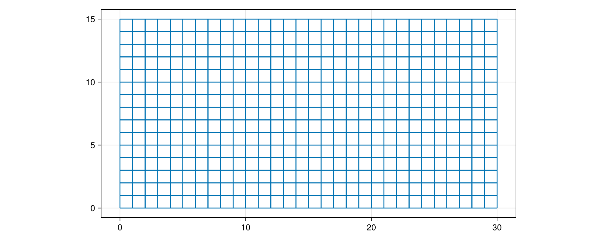
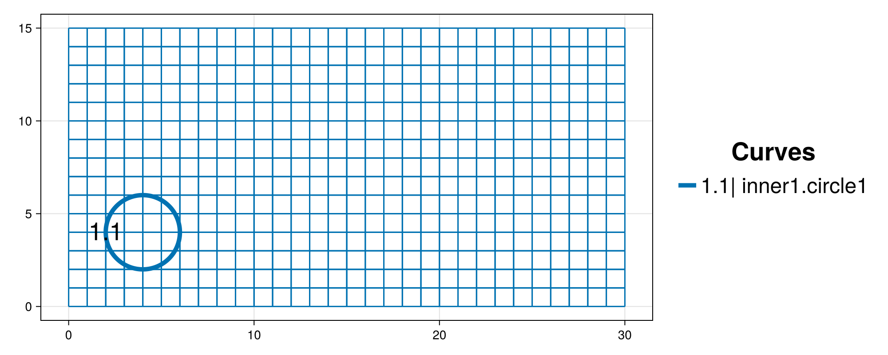
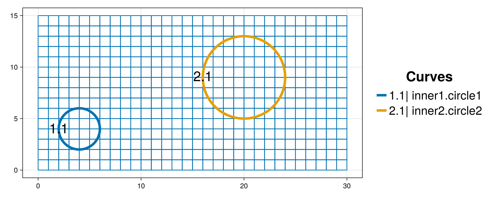
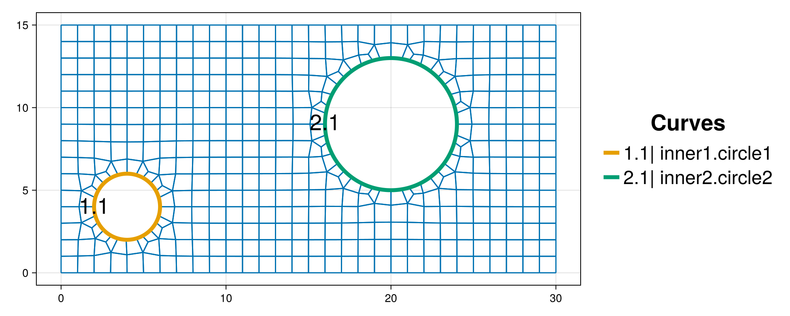

Straight-sided outer boundary
The purpose of this tutorial is to demonstrate how to create an unstructured mesh on a rectangular domain that contains two circular inner boundaries. Further, we show how to adjust some of the default mesh parameters as well as the output mesh file format. The outer boundary, background grid and mesh will be visualized for quality inspection.
It provides details and clarification for the script interactive_outer_box_two_circles.jl from the examples folder.
Synopsis
This tutorial demonstrates how to:
- Query and adjust the
RunParametersof a project. - Define a rectangular outer boundary and set the background grid.
- Visualize an interactive mesh project.
- Add circular inner boundary curves.
Initialization
Before we start, we need to load the required packages. Besides HOHQMesh.jl, we use CairoMakie.jl for visualization. Alternatively, one can use GLMakie for interactive visualization in a Julia REPL session.
using HOHQMeshusing CairoMakieNow we are ready to interactively generate unstructured quadrilateral meshes!
We create a new project with the name "box_two_circles" and assign "out" to be the folder where any output files from the mesh generation process will be saved. By default, the output files created by HOHQMesh will carry the same name as the project. For example, the resulting HOHQMesh control file from this tutorial will be named box_two_circles.control. If the folder out does not exist, it will be created automatically in the current file path.
box_project = newProject("box_two_circles", "out");Adjusting project parameters
When a new project is created it is filled with several default RunParameters such as the polynomial order used to represent curved boundaries or the mesh file format. These RunParameters can be queried and adjusted with appropriate getter/setter pairs, see Controlling the mesh generation for more details.
For the box_project we first query the current values for the polynomial order
getPolynomialOrder(box_project)5and the mesh output format
getMeshFileFormat(box_project)"ISM-V2"We change these quantities in the box_project with the corresponding setter functions. For this we will set the polynomial order to be $4$ and the mesh file format to be ABAQUS. See the P4est-based mesh section of the Trixi.jl documentation for a detailed overview of this mesh file format.
setPolynomialOrder!(box_project, 4);setMeshFileFormat!(box_project, "ABAQUS");Add the background grid
HOHQMesh requires a background grid for the mesh generation process. This background grid sets the base resolution of the desired mesh. HOHQMesh will automatically subdivide from this background grid near any curved boundaries.
The domain for this tutorial is a rectangular box with the bounds $[0,30]\times[0,15]$. Because no outer boundary curve is present there are two (equivalent) strategies for us to define the bounds of a rectangular domain and the size of the background grid:
- Set the lower left corner point of the domain $(x_0, y_0)$, define the element size in each spatial direction $\Delta x$ and $\Delta y$, and the number of steps taken in each direction $N_x, N_y$. The resulting background grid will have the extent $[x_0, x_0 + N_x \Delta x]$ by $[y_0, y_0 + N_y \Delta y]$. For this example, we set a background grid of Cartesian elements with size one in each dimension with the following commands
lower_left = [0.0, 0.0, 0.0];spacing = [1.0, 1.0, 0.0];num_intervals = [30, 15, 0];addBackgroundGrid!(box_project, lower_left, spacing, num_intervals);- Set the bounding box with extent values ordered as
[top, left, bottom, right]and provide the number the number of steps in each direction. To set a background grid of Cartesian elements with size one in each dimension for the rectangular box $[0,30]\times[0,15]$ we use
bounds = [15.0, 0.0, 0.0, 30.0];N = [30, 15, 0];addBackgroundGrid!(box_project, bounds, N);Next, we visualize the box_project to ensure that the background grid has been added correctly. We use the keyword and GRID to indicate that we want the background grid to be included in the visualization. The optional argument figureSize is used here to produce plots with reduced white space for better presentation in the docs.
plotProject!(box_project, GRID; figureSize = (1000, 400))
Add the inner boundaries
Next, we add the two circular inner boundary curves with different radii.
The first circle will have radius $r=2$ and be centered at the point $(4, 4)$. We define this circular curve with the function newCircularArcCurve as follows
circle1 = newCircularArcCurve("circle1", # curve name [4.0, 4.0, 0.0], # circle center 2.0, # circle radius 0.0, # start angle 360.0, # end angle "degrees"); # angle unitsWe use "degrees" to set the angle bounds, but "radians" can also be used. The name of the curve stored in the dictionary circle1 is assigned to be "circle1". This curve name is also the label that HOHQMesh will give to this boundary curve in the resulting mesh file.
The new circle1 curve is then added to the box_project as an inner boundary curve with
addCurveToInnerBoundary!(box_project, circle1, "inner1");Added curve circle1 to the inner1 chain.This inner boundary chain name "inner1" is used internally by HOHQMesh. The visualization of the background grid automatically detects that a curve has been added to the project and the plot is updated appropriately, as shown below. The chain for the inner boundary curve is called "inner1" and it contains a single curve "circle1" labeled in the figure by 1.1.

With analogous steps we create another circular curve with radius $r=4$, centered at $(20, 9)$ and add it as a second inner curve to the box_project. Note, for this curve we use radians for the angle units.
circle2 = newCircularArcCurve("circle2", # curve name [20.0, 9.0, 0.0], # circle center 4.0, # circle radius 0.0, # start angle 2.0 * pi, # end angle "radians"); # angle unitsaddCurveToInnerBoundary!(box_project, circle2, "inner2")Added curve circle2 to the inner2 chain.Again, the box_project detects that a curve has been added to it and the visualization is automatically updated with the second circular curve. The chain for the second inner boundary curve is called "inner2" and it contains a single curve "circle2" labeled in the figure by 2.1.

Generate the mesh
With the background grid and all inner boundary curves added to the box_project we can generate the mesh. This will output the following files to the out folder:
box_two_circles.control: A HOHQMesh control file for the current project.box_two_circles.tec: A TecPlot formatted file to visualize the mesh with other software, e.g., ParaView.box_two_circles.inp: A mesh file with formatABAQUSthat was set above.
To do this we execute the command
generate_mesh(box_project)
*******************
2D Mesh Statistics:
*******************
Total time = 3.1888000000000000E-002
Number of nodes = 498
Number of Edges = 921
Number of Elements = 422
Number of Subdivisions = 0
Mesh Quality:
Measure Minimum Maximum Average Acceptable Low Acceptable High Reference
Signed Area 0.34513977 1.15385313 0.91833886 0.00000000 999.99900000 1.00000000
Aspect Ratio 1.00000004 1.71084672 1.08736698 1.00000000 999.99900000 1.00000000
Condition 1.00000000 1.46547984 1.04928616 1.00000000 4.00000000 1.00000000
Edge Ratio 1.00000006 2.43578615 1.16710823 1.00000000 4.00000000 1.00000000
Jacobian 0.17854786 1.07210200 0.86801191 0.00000000 999.99900000 1.00000000
Minimum Angle 50.57680339 89.99999787 83.84338772 40.00000000 90.00000000 90.00000000
Maximum Angle 90.00000259 136.97085026 96.70176380 90.00000000 135.00000000 90.00000000
Area Sign 1.00000000 1.00000000 1.00000000 1.00000000 1.00000000 1.00000000
Boundary Error Quality:
Boundary Name Max L2 Error Max H1 Error
inner1 2.95974632E-08 7.37702616E-06
inner2 2.73798428E-09 1.17846153E-06The call to generate_mesh prints mesh quality statistics to the screen and updates the visualization. The HOHQMesh output also reports the maximum $L^2$ and $H^1$ errors along the curved inner boundaries where the information is listed according to the chain name. The background grid is removed from the visualization when the mesh is generated and the resulting mesh is visualized instead.

From a visual inspection we decide that we are satisfied with the mesh quality and resolution near the inner circular boundaries.
Summary
In this tutorial we demonstrated how to:
- Query and adjust the
RunParametersof a project. - Define a rectangular outer boundary and set the background grid.
- Visualize an interactive mesh project.
- Add circular inner boundary curves.
This page was generated using Literate.jl.